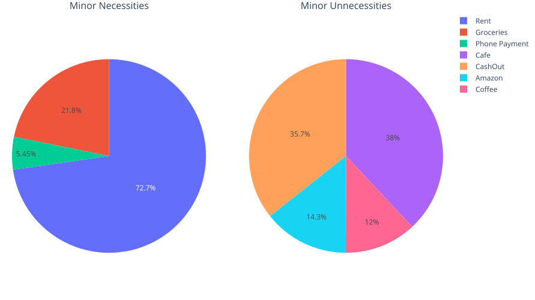

Personal Financial Reports
Features
The Features of this project are as follows:
- Uses CSV files from Online Banking Portals
- Supports Multiple Accounts and Accounts from different Banks
- Naming and Tagging of Transactions
- i.e. Tags and Naming for transactions such as:
- Vendor: Aldi
- Major: Food
- Minor: Groceries
- i.e. Tags and Naming for transactions such as:
- Constructs Tables and Graphs from Account Data
- Outputs a PDF monthly financial report with Tables and Graphs
To approach this project I have broken it down into 4 parts:
- Import and Process Raw Data into ‘processed files’ and save them
- append unique transaction data from the processed csv files to a collated master CSV file
- Processing the master CSV data
- Creating Figures from master CSV file
- Generating a PDF file and populating with Figures.
Part 1: Handling Raw Data and Formatting to Processed Data
The transaction data is obtained from the export feature available from most online banking portals. This data first needs to imported and parse.
def ProcessRaw():
for i in raw_data_files:
if list(i)[0] == ".": #I am on mac so this avoids .DS_Store
continue
print(f"Processing {i}")
raw_file_path = os.path.join(raw_data_folder,i)
processed_filepath = os.path.join(processed_data_folder,i)
if Banks["FirstBank"] in i:
df = pd.read_csv(raw_file_path,delimiter=";")
DataFormatBankOne(df)
DropColumnsBankOne(df)
df = ReorderBankOne(df)
df = ReorderBankOne(df)
CreateMainID(df) # Needed for avoiding duplicate transactions
SaveProcessed(df,processed_filepath)
if Banks["Commbank"] in i:
df = pd.read_csv(raw_file_path,delimiter=";")
# Similar Formatting to First Bank
CreateMainID(df)
SaveProcessed(df,processed_filepath)
print(f"Processed {i} saved to {processed_filepath}\n")the Banks Dictionary is a dictionary with keys as the name of the bank/account, and its values consist of some regex within its filename to identify as different banks/account have different headers and data formats, dates in particular. e.g.
Banks = {"Sparkasse":"sparkasse.*", # filename contains sparkasse
"Deutsche Bank":"^DB.*" # filename starts with DB
} The ProcessRaw() function iterates through all files in raw_data_files and based on the identified bank/account a series of formatting functions are performed to standarized the data, and concluding with the CreateMainID() function.
def CreateMainIDSparkasse(df):
"""
A Simple Hash to create a discernible primary key across data files.
"""
df["ID"] = (pd.util
.hash_pandas_object(df[["Confirmaton date", "Amount", "Vendor"]]
,index=False).abs())
return NoneThis function solves a lack of a unified primary key, as well as discerning duplicate transactions for the case where the same transaction exists in multiple files, that will be modified by using a combination of data columns that will not be altered to create a simple, unique hash value.
For my case this happended frequently as two of my csv files had the largely the same data as a result of exporting the last year of data twice, two months apart.
The formatting functions DataFormatBankOne,DropColumnsBankOne and ReorderBankOne are largely dependant on your transaction data and as such I won’t show the functions here. The goal of these functions is to format each banks transaction data to the same data formats and column headers e.g.
Dropcolumns exampleThe use of
if Banks["FirstBank"] in i:
# and
if Banks["SecondBank"] in i:could be replace with something like
for key in Bank:
df = pd.read_csv(raw_file_path,delimiter=";")
DataFormatBankOne(df,key)
DropColumnsBankOne(df,key)
df = ReorderBankOne(df,key)
df = RenameBankOne(df,key)
CreateMainID(df)
SaveProcessed(df,processed_filepath)for a large amount of banks/accounts and passing the Bank key into the formatting functions to handle differences. I was only working with two banks so I saw no need to make things more complicated.
Thus ProcessRaw() imports the raw data and formats the pandas dataframes into a standardized set of columns and data formats. It then saves this dataframe as a csv into a processed folder with the rest of the processed dataframes for merging into the master CSV file.
def SaveProcessed(df,processed_filepath):
if os.path.exists(processed_filepath):
os.remove(processed_filepath)
df.to_csv(processed_filepath,sep=";",index=False)
return NoneParts 2 and 3: Processing and Collating Master CSV
For simplicity it was decided to merge parts 2 and 3. This results in a single for loop that first imports the processed csv data into a dataframe, creates all tags and any additional formatting steps to that dataframe, and finally appends only new data rows to the master CSV based on the ID Hash previously created:
mf = isMasterdata() # Safe import csv File
processed_data_files = csvFiles(processed_data_folder)
Vendor_Dict = ImportVendorListFromIni(Vendor_path)
for file in processed_data_files:
bf=pd.read_csv(file,delimiter=";")
if Banks["FirstBank"] in file:
bf = ApplyVendorList(df,Vendor_Dict)
bf = BankOneMasterFormat(df)
bf = ClassifyVarious(df)
#^ Various classifcations that are not suitable for ApplyVendorList()
bf = ApplyTags(df,Tags_path)
bf = ImportAndApplyRecurrings(df,Recurs_path)
#^ Classify Recurring payments based on a list
new_rows = df[~df["ID"].isin(mf["ID"])]
if Banks["SecondBank"] in file:
bf = ApplyVendorList(df,Vendor_Dict)
bf = BankTwoMasterFormat(df)
bf = ClassifyVarious(df)
#^ Various classifcations that are not suitable for ApplyVendorList()
bf = ApplyTags(df,Tags_path)
bf = ImportAndApplyRecurrings(df,Recurs_path)
#^ Classify Recurring payments based on a list
new_rows = bf[~bf["ID"].isin(mf["ID"])]
if mf.empty: # --
mf = new_rows.copy() # -- Avoids a FutureWarning
elif not new_rows.empty: # --
mf = pd.concat([mf, new_rows], ignore_index=True)
#^ Only add if unique ID
ExportMFtoMasterTransactions(mf,mastercsv_filePath)Explaining the above code cell, the first function isMasterdata(), first checks if the Master CSV File exists, if it does it, outputs a dataframe of the csv. If it doesnt exists it creates the file and populates it with the column headings, then outputs the mf dataframe.
def isMasterdata():
masterCols = ["ID","Vendor","Cost","Currency","Data","Comment"
,"Account","AccountNo.","BIC (SWIFT-Code)","Un/Necessary",
"Major","Minor","IsReccuring"]
if os.path.exists(mastercsv_filePath):
mf = pd.read_csv(mastercsv_filePath,delimiter=";")
else:
f = open(mastercsv_filePath,"a")
strCols = ''
for i in masterCols:
strCols = strCols + ";" + i
f.write(strCols[1:])
f.close()
mf = pd.read_csv(mastercsv_filePath,delimiter=";")
return mfI will skip over ImportVendorListFromIni() as thats self-explanatory, and once again the functions ApplyVendorList(), BankMasterFormat(),… are dependent on the formatting of your csv files, as well as your preferences for the tags you want to create from your data and ultimately what you will want to keep track of in terms of your personal finances. One such tag I recommend is indicating which payments are regularly recurring.
Once the bank dataframe bf is formatted and ready to be merged, the first step is find the new rows in bf that are not in mf
new_rows = bf[~bf["ID"].isin(mf["ID"])] # a dataframe of only new rowsWith that dataframe we want to add those rows to mf. If mf is empty, (This happens when the masterCSV does not exist and is created in isMasterdata()), we can simply overwrite mf with a copy of new_rows
if mf.empty:
mf = new_rows.copy()If mf is not empty we concatenate the new_rows dataframe to the end of mf.
elif not new_rows.empty:
mf = pd.concat([mf, new_rows], ignore_index=True)
#^ Only add if unique IDIf your column headers in new_rows are not the same as in mf pd.concat() will create unwanted column headers in your mf. I would advise making the bf columns headers the same as mf in your formatting section of the for loop.
Finally mf is safely exported to the master CSV file with ExportMFtoMasterTransactions()
Part 4: Creating Figures from Master CSV File
With Formatting the data completed, now figures, tables and graphs can be created to visualize monthly spending, spending categories, and more. As too what figures to create that is dependent on what you want to track, aspects of your finances you want to monitor.
E.g. if you want to monitor your savings progress each month, you can create a table of your income, expenses, net and savings ratio
| Income | $1,875 |
| Expenses | $1,503 |
| Net/Savings | $372 |
| Savings Ratio | 19.84% |
For a graph, a breakdown of your Monthly purchases based on Major and Minor categories can be useful, for example:

As for what went with, for this project I had the following figures, creating using pandas,plotly and IPython for the previous month.
- Overview Table: Income, Expenses and Net
- Expenses Table: Breaks down expenses based on Major and Minor tags
- Necessities Table: Outlines and totals expenses that are deemed necessary
- Recurring Payments Table: Outlines and totals expenses that are recurring and nex payment data
- Majors Pie Chart: Pie chart of expenses based on Major Tags
- Neccessaries and Unneccessaries Pie Chart: Visualizes percentage of necessary and unnecessary expenses that month.
The full code for these figures can be found on github at: https://github.com/Jordoler/FinReports in CreateFigures.py
Part 5: Generating the Report
Foreword
To generate the report, lots of different methods and modules were tried, originally the idea was to create a juypter notebook and use nbconvert however the styling options were limited. ReportLab was investigated, however provded too complex and complicated for the project.
Finally a mutli-step pdf generation method was chosen that utilises Quarto to generate a stylized html page of the report, and playwright to save this html page as a pdf, using a headless chromium browser.
The key benefit with this approach is that I have experience using Quarto and thus know how to easily style the report to my liking, additionally Playwright browser.new_page().pdf() function maintains alot of the geometry and styling of the Quarto html page.
This website was created using Quarto!
I focused on creating a template with Quarto that I can then populate create month’s financial report with, this proved rather confusing as Quarto’s documentation mentions support for variables via a _variables.yml and using {{< var VARIABLE_NAME >}} in the .qmd file, more info here although this didn’t seem to work, so I opted for using the integrated notebook feature in Quarto to display graphs and tables.
The Final Result
The final result is a financial report of my personal finances available every month!
Future Improvements
With the approach mentioned above, each table, graph and figure are all generated as .jpeg or .svg files, taking sometime to generate, ~40 seconds. An approach that generates the report from a html template and populating html tables would decrease the time.